16日目～旧日本軍の防空壕～
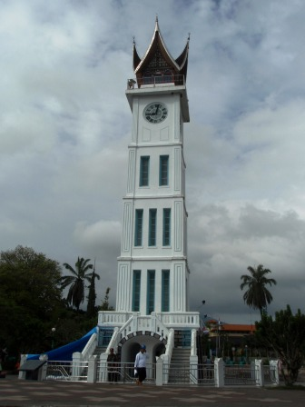
今日はブキティンギを離れ、空港のあるパダンへと向かう日だ。コック要塞もいいとは思ったが、時間も限られているのでまずは旧日本軍の防空壕に行くことに。
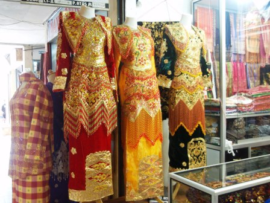
デパートで見つけた派手な衣装。ミナンカバウ族の伝統衣装だろうか。
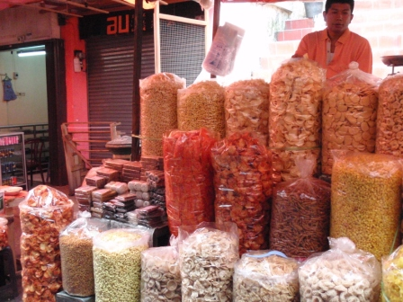
防空壕に行く前に市場で買い物を楽しむことにした。これは大量に積まれたスナック類。
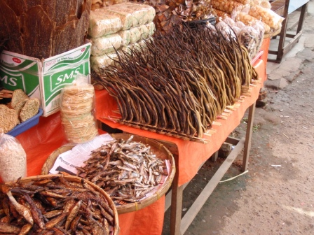
市場は独特の香りが漂っていた。おそらくこの魚の干物類から放たれたもの。
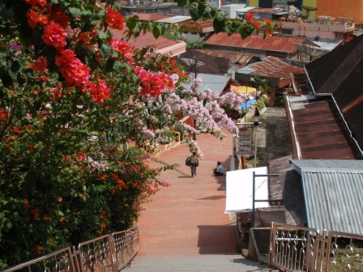
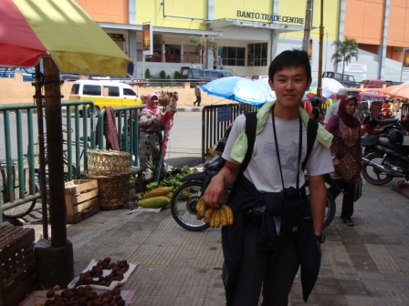
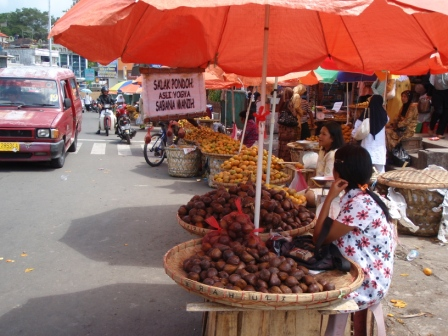
市場では定番のバナナや、一風変わったサラッというフルーツを購入。
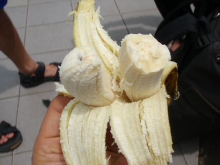
さっき買ったバナナの中には二つつながったものがあった。
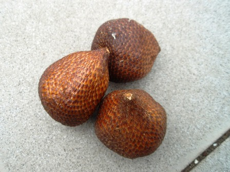
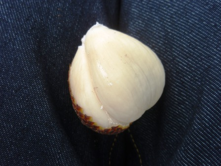
サラッはむいてみるとニンニクのような見た目をしていたが、臭いはきつくなく、たとえようのない味がした。固めの食感で、あまり甘くはない。
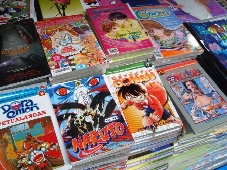
市場ではあちこちで日本のマンガも売られていた。
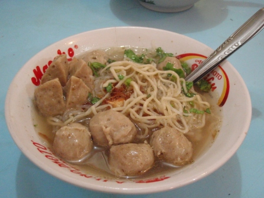
地球の歩き方～食べ物編～を見てかねてから食べたいと思っていたミーバッソ(肉団子入り麺)。評判通りの味で、辛くなく肉団子の旨味がうまく出ており非常に美味！
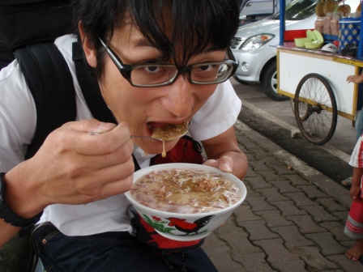
屋台では大井が念願のドリアン入りデザートを購入。見た目はややグロテスクだが、本人はうまいうまいと食べていた。ただし味の感じ方は人それぞれ。
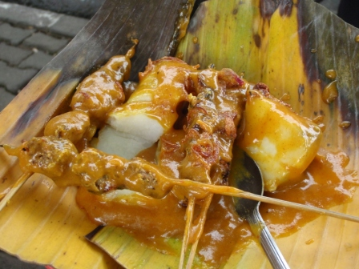
隣の屋台でKENが購入したサテアヤン(焼き鳥)の盛り合わせ。
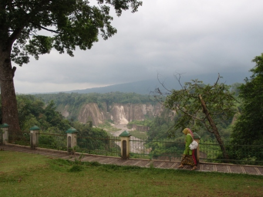
旧日本軍の防空壕は入場料約30円で、入り口の周りは公園になっていてガライ・シアノッ渓谷が見渡せた。町のはずれがいきなりジャングルになっていたのは驚きだった。
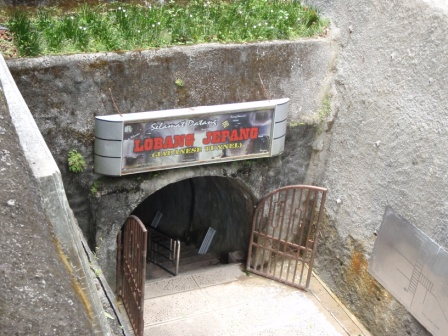
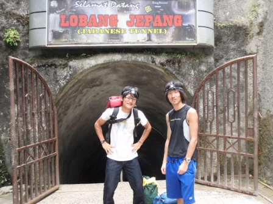
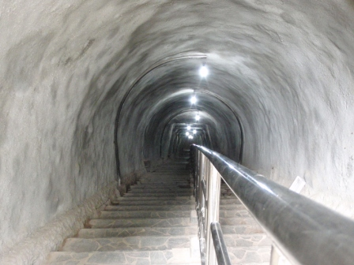
これが入り口。斜め下に奥深く続いている。ヘッドライトを点け、さあ探検だ！
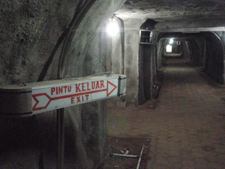
内部は格子状の通路になっていてトイレもあるようだった。その気になれば数千人は居住できたのではないだろうか。
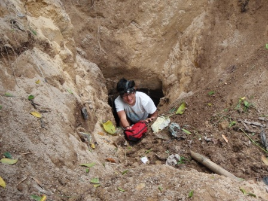
内部を探索しているといくつもの緊急脱出口のようなものが認められたが、鉄格子で出れなくなっているものがほぼ全てだった。一つ極端に穴のサイズが小さいものがあり、鉄格子もないので出てみるとジャングルへと続く岸壁の中腹に出てしまった。出たすぐのところで大トカゲも目撃できたが、すぐに逃げてしまったので写真に収めることはできなかった。
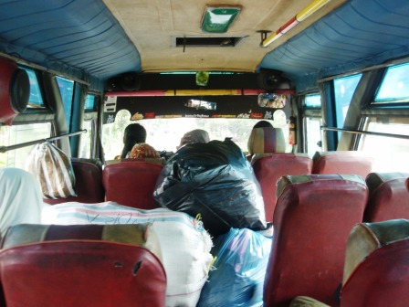
防空壕探検の後はバスターミナルからパダン行のバスに乗った。普通にチケット売り場で買えると思ったのに何人ものおじさんから声をかけられ、かなり値切っての乗車となった。
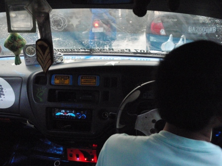
パダンへ移動中、今まで最強のスコール到来。おまけにパダンの市街までバスは行かず、町はずれで降ろされてしまった。そのころにはかなり雨は弱まっていたのが幸い。パダンの町には相当な数の乗り合いバスが走っていたが、どれも見た目は派手で、奇妙な音の出るクラクションを鳴らすものもあった。宿まではこれに乗せてもらうことに。地球の歩き方にのっている宿を2軒訪ねたが、いずれも記載されていた額の2倍ほどしたため断念。
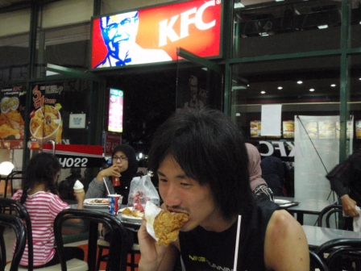
2軒目の宿からは徒歩で宿を探した。値段はあまり安くなかったが、回った中では最も安かったのでとある宿に決め、ケンタッキーで夕飯をとった。フライドチキンは1本100円程度と日本の半額以下！味は日本のものよりもスパイシー。
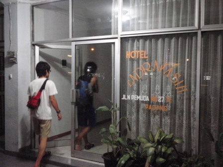
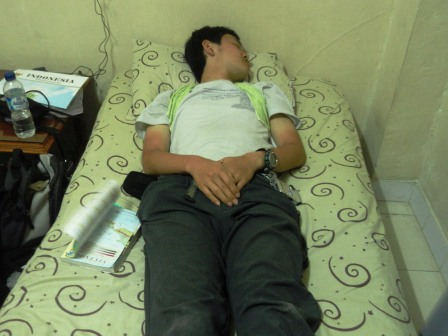
宿に戻ってからはすぐに就寝。久しぶりの移動や、パダンの町の喧騒に圧倒されて疲れた。
翌日へ